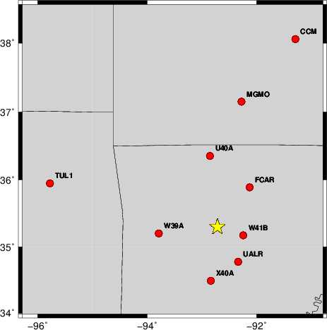

The derived shift in origin time and epicentral coordinates are given at the bottom of the figure.
The focal mechanism was determined using broadband seismic waveforms. The location of the event and the and stations used for the waveform inversion are shown in the next figure.
|  |
|
|
The program wvfgrd96 was used with good traces observed at short distance to determine the focal mechanism, depth and seismic moment. This technique requires a high quality signal and well determined velocity model for the Green functions. To the extent that these are the quality data, this type of mechanism should be preferred over the radiation pattern technique which requires the separate step of defining the pressure and tension quadrants and the correct strike.
The observed and predicted traces are filtered using the following gsac commands:
hp c 0.02 n 3 lp c 0.10 n 3The results of this grid search from 0.5 to 19 km depth are as follow:
DEPTH STK DIP RAKE MW FIT
WVFGRD96 0.5 90 65 0 3.94 0.9013
WVFGRD96 1.0 85 60 -10 3.98 0.9353
WVFGRD96 2.0 85 70 -20 4.00 0.9777
WVFGRD96 3.0 85 70 -20 4.01 0.9525
WVFGRD96 4.0 85 75 -15 4.01 0.9103
WVFGRD96 5.0 90 80 -15 4.01 0.8679
WVFGRD96 6.0 270 85 15 4.01 0.8343
WVFGRD96 7.0 270 75 10 4.02 0.8204
WVFGRD96 8.0 270 75 10 4.03 0.8067
WVFGRD96 9.0 270 75 10 4.03 0.7949
WVFGRD96 10.0 270 75 15 4.05 0.7845
WVFGRD96 11.0 270 75 15 4.05 0.7712
WVFGRD96 12.0 270 75 15 4.06 0.7581
WVFGRD96 13.0 270 75 10 4.07 0.7469
WVFGRD96 14.0 270 75 10 4.07 0.7360
WVFGRD96 15.0 270 75 10 4.08 0.7269
WVFGRD96 16.0 270 75 10 4.08 0.7185
WVFGRD96 17.0 270 75 10 4.09 0.7094
WVFGRD96 18.0 270 75 10 4.10 0.7012
WVFGRD96 19.0 270 75 10 4.11 0.6938
WVFGRD96 20.0 270 70 10 4.12 0.6856
WVFGRD96 21.0 270 70 10 4.12 0.6764
WVFGRD96 22.0 270 70 10 4.13 0.6707
WVFGRD96 23.0 270 70 10 4.13 0.6662
WVFGRD96 24.0 270 75 10 4.14 0.6614
WVFGRD96 25.0 270 80 15 4.14 0.6646
WVFGRD96 26.0 270 75 5 4.14 0.6683
WVFGRD96 27.0 270 75 5 4.15 0.6718
WVFGRD96 28.0 270 80 15 4.16 0.6759
WVFGRD96 29.0 265 70 -10 4.16 0.6814
WVFGRD96 30.0 265 70 -10 4.17 0.6879
WVFGRD96 31.0 265 70 -10 4.17 0.6916
WVFGRD96 32.0 265 70 -10 4.18 0.6940
WVFGRD96 33.0 265 70 -10 4.18 0.6934
WVFGRD96 34.0 265 70 -10 4.19 0.6931
WVFGRD96 35.0 265 70 -10 4.20 0.6915
WVFGRD96 36.0 265 70 -10 4.21 0.6886
WVFGRD96 37.0 270 75 5 4.22 0.6854
WVFGRD96 38.0 265 70 -5 4.24 0.6835
WVFGRD96 39.0 265 70 -5 4.25 0.6809
WVFGRD96 40.0 265 65 -10 4.29 0.6794
WVFGRD96 41.0 265 65 -10 4.30 0.6732
WVFGRD96 42.0 265 65 -10 4.31 0.6668
WVFGRD96 43.0 265 65 -10 4.32 0.6602
WVFGRD96 44.0 265 65 -10 4.32 0.6526
WVFGRD96 45.0 265 65 -10 4.33 0.6457
WVFGRD96 46.0 265 65 -10 4.34 0.6385
WVFGRD96 47.0 265 65 -10 4.35 0.6323
WVFGRD96 48.0 265 65 -10 4.35 0.6263
WVFGRD96 49.0 265 65 -10 4.36 0.6220
The best solution is
WVFGRD96 2.0 85 70 -20 4.00 0.9777
The mechanism correspond to the best fit is
|
|
The best fit as a function of depth is given in the following figure:
|
|
The comparison of the observed and predicted waveforms is given in the next figure. The red traces are the observed and the blue are the predicted. Each observed-predicted component is plotted to the same scale and peak amplitudes are indicated by the numbers to the left of each trace. A pair of numbers is given in black at the right of each predicted traces. The upper number it the time shift required for maximum correlation between the observed and predicted traces. This time shift is required because the synthetics are not computed at exactly the same distance as the observed and because the velocity model used in the predictions may not be perfect. A positive time shift indicates that the prediction is too fast and should be delayed to match the observed trace (shift to the right in this figure). A negative value indicates that the prediction is too slow. The lower number gives the percentage of variance reduction to characterize the individual goodness of fit (100% indicates a perfect fit).
The bandpass filter used in the processing and for the display was
hp c 0.02 n 3 lp c 0.10 n 3
|
|
| Focal mechanism sensitivity at the preferred depth. The red color indicates a very good fit to thewavefroms. Each solution is plotted as a vector at a given value of strike and dip with the angle of the vector representing the rake angle, measured, with respect to the upward vertical (N) in the figure. |
A check on the assumed source location is possible by looking at the time shifts between the observed and predicted traces. The time shifts for waveform matching arise for several reasons:
Time_shift = A + B cos Azimuth + C Sin Azimuth
The time shifts for this inversion lead to the next figure:
The derived shift in origin time and epicentral coordinates are given at the bottom of the figure.